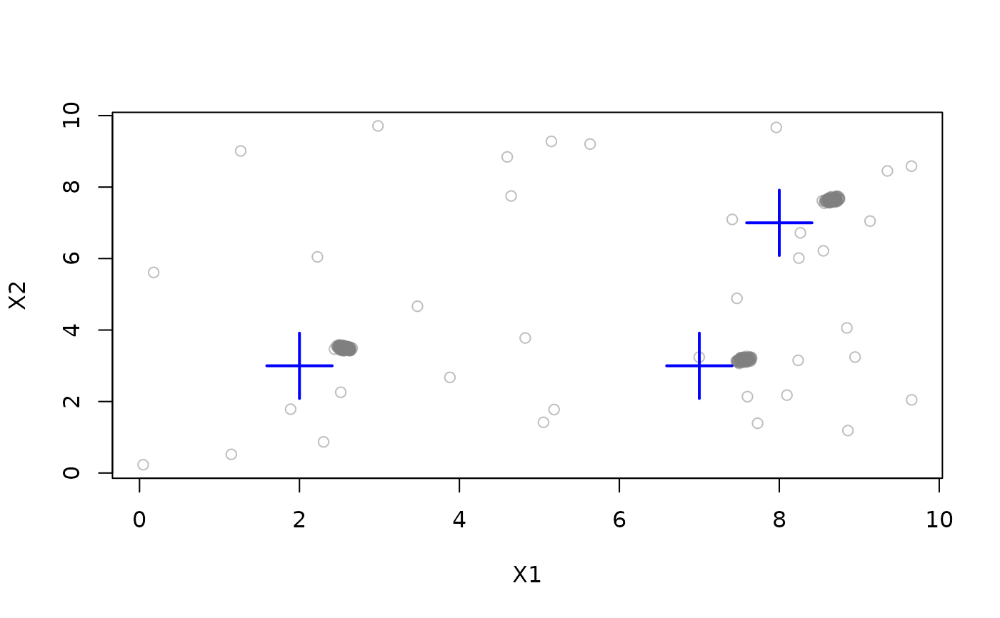

This is an interface to the MOA implementation of D-Stream. A C++ implementation (including reclustering with attraction) is available as stream::DSC_DStream.
Details
D-Stream creates an equally spaced grid and estimates the density in each grid cell using the count of points falling in the cells. Grid cells are classified based on density into dense, transitional and sporadic cells. The density is faded after every new point by a decay factor.
Notes
The implementation uses a 1-by-1 grid, so the example expands the data range.
The MOA implementation does not currently return micro-clusters.
References
Yixin Chen and Li Tu. 2007. Density-based clustering for real-time stream data. In Proceedings of the 13th ACM SIGKDD International Conference on Knowledge Discovery and Data Mining (KDD '07). ACM, New York, NY, USA, 133-142.
Li Tu and Yixin Chen. 2009. Stream data clustering based on grid density and attraction. ACM Transactions on Knowledge Discovery from Data, 3(3), Article 12 (July 2009), 27 pages.
See also
Other DSC_MOA:
DSC_BICO_MOA(),
DSC_CluStream(),
DSC_ClusTree(),
DSC_DenStream(),
DSC_MCOD(),
DSC_MOA(),
DSC_StreamKM()
Examples
set.seed(1000)
stream <- DSD_Gaussians(k = 3, d = 2, noise = 0.05, space_limit = c(0, 10))
# cluster with D-Stream
dstream <- DSC_DStream_MOA(Cm = 3)
update(dstream, stream, 1000)
dstream
#> DStream
#> Class: moa/clusterers/dstream/Dstream, DSC_MOA, DSC_Micro, DSC
#> Number of macro-clusters: 3
# plot macro-clusters
plot(dstream, stream, type = "macro")
